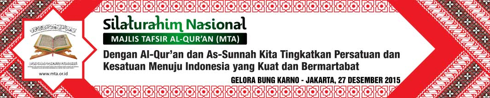

Jl. Ronggowarsito No. 111A Surakarta 57131, Telp (0271) 663299, Fax
(0271) 663977
|
KHUSUS UNTUK PARA SISWA/PESERTA

Jl. Ronggowarsito No. 111A Surakarta 57131, Telp (0271) 663299, Fax
(0271) 663977
|
